Næsta Mótorhjólið í safnið.
Verkefni 2 felur í sér smíði á svokölluðu "press fittings" en það eru hlutir sem settir eru saman úr fleiri en einum íhlut og halda sér saman án þess að stuðst sé við lím eða skrúfur. Ekki er það allt, því hlutinn skal hann í teikniforiti, í mínu tilfelli Inventor og þar skal notast við svokallað parameters. Parameters er stef þessa verkefnis en í lok er svo skorið út úr timbri með lazer skurði.
Eftir að hafa teiknað í Inventor komu í ljós ýmis vandamál t.d. þá er töluvert auðveldara að vinna þetta allt saman í Fusion því það forrit skilar teikningum út fyrir forritið í laser skeranum Inkscape án nokkura vandræða og t.d. í inventor teikningum þarf að teingja allar línurnar saman, en það má sjá á myndbandi hér að neðan hvernig það er gert. Ég mæli með að fara bara beint á 10. mínútu og þá sýnir hann hvernig þetta er gert í 4 skrefum, ekki línu fyrir línu. Til þess að koma teikningum úr Inventor og í Inkscape þá set ég myndband um það hvernig það er gert.
Þegar búið var loks að koma teikningum úr Inventor yfir í Inkscape þá tóku við ný vandamál sem þurfti að leysa. Fingurnir, ribbur kýs ég að kalla þá pössuðu ekki nógu vel saman, þó svo teiknað hafi verið þannig að mamma og pabbi væri stíf mál, þeas nákvæmlega sama stærð á mömmu og pabba. Það sem gerist hinsvegar við laser skurð er að laserinn tekur ca 0.02mm úr efninu og það veldur því að þetta verður rúmt, þeas ekki press fittings eins og þetta á að vera. Til þess að leysa það, má líka sjá myndband hér að neðan, en Arnar fór í gegnum það með mér og það felur í sér að í raun Offesta útlínur út um lítin part úr mm og göt afturá mót eru offestuð inn, til að þrengja. Því mæli með að gera það sem ég gerði í raun ekki, minnka stykkið í litla einingu og prófa hvernig þetta kemur út í stað þess að sólunda efni.
Fyrsta myndin hér að neðan sýnir brjun á þessari teikningu...fyrst teiknaði ég án parameters og þurfti að henda því og byrja allt upp á nýtt og fyrsta verkið var að skilgreina parametra en þá má sjá á næstu tveimur myndum.
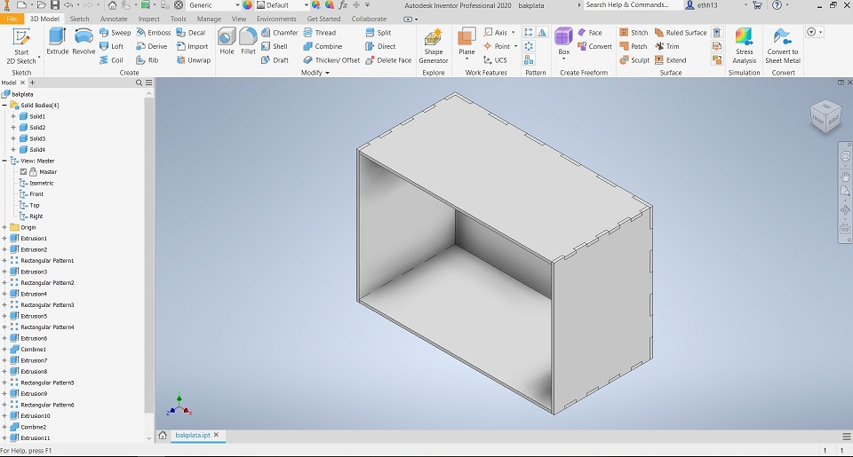Myndirnar 2 hér að neðan sýna hvernig ég vann með parametra, hvernig ég skilgreindi þá og nöfnin sem ég gaf þeim. Ég mæli eindregið með að nefna parametra þægilegum nöfnum sem auðvelt er að muna því annars þarftu að fara út úr því sem þú ert að gera og finna parametrana, ekki nema tekið sé screenshot af þeim
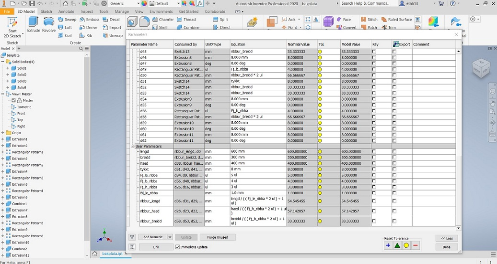Þegar búið var að teikna í Inventor tók við að exporta myndunum yfir í Inkscape en til þess þurfti að framkvæma nokkur skref og má sjá þau skref á myndunum hér að neðan. Á fyrstu myndini má sjá hvernig heldar stykki er í raun bútað niður þeas hillur sem eru lóðréttar gerðar að sér stykki o.s.frv. til þess þarf að búa til sér part eins og sést á 2 myndum hér að neðan. þegar það er gert þarf oft að ýta á Home takkan sem er í horninu á zoom möguleika til þess hreinlega að finna stykkið. Einnig þarf að passa að sú hlið sem þú vilt að sé skorinn út snúi framan í þig.
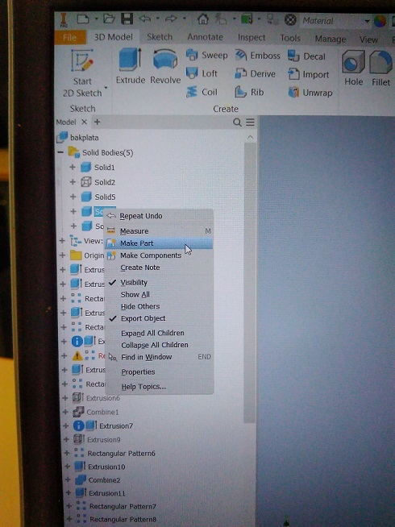 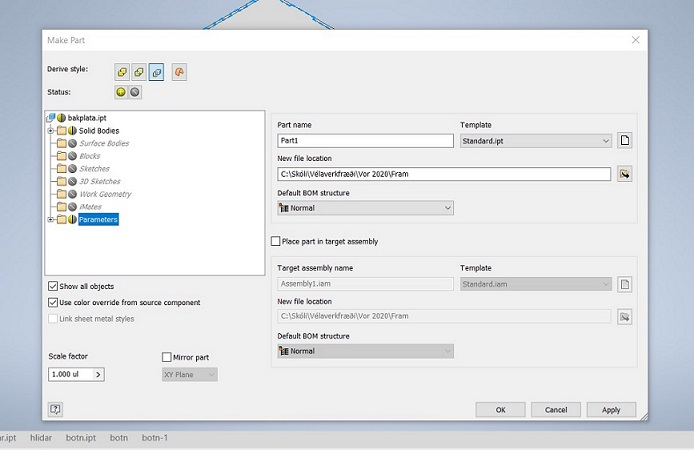Þegar búið er að búa til part sem þú vilt að sé skorinn út er næsta skref að Create Drawins View
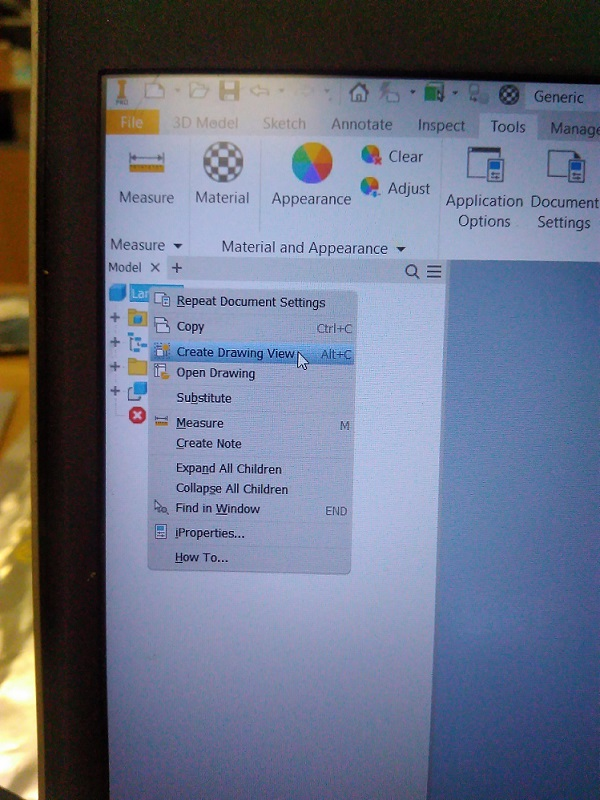
Þá koma upp þessir tveir gluggar og mikilvægt að segja yes to all og svo að velja standar idw
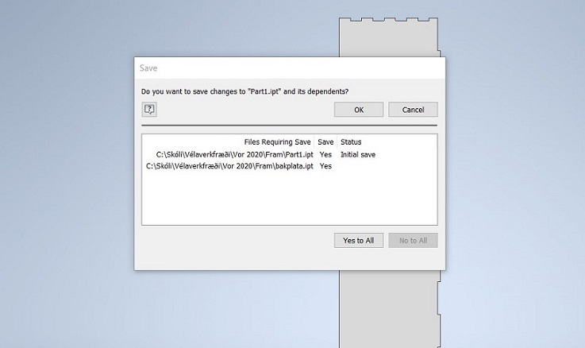 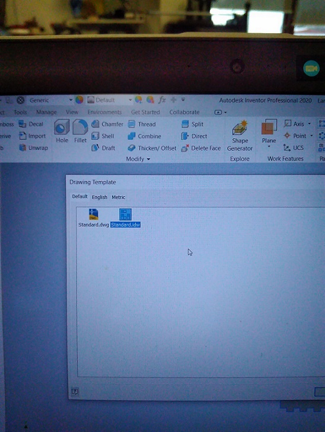Þegar búið er að skala teikningu í 1:1 og setja hana á blaðið eins og kosið er kemur það skref sem er kannski mikilvægast, allavega tók verulega á að finna út úr því hvernig þetta er gert og mjög mikilvægt að þetta sé gert nákvæmlega svona svo hreinlega sé hægt að flytja teikningu yfir í Inkscape. Save Copy As. Ekki gera save heldur Save Copy As
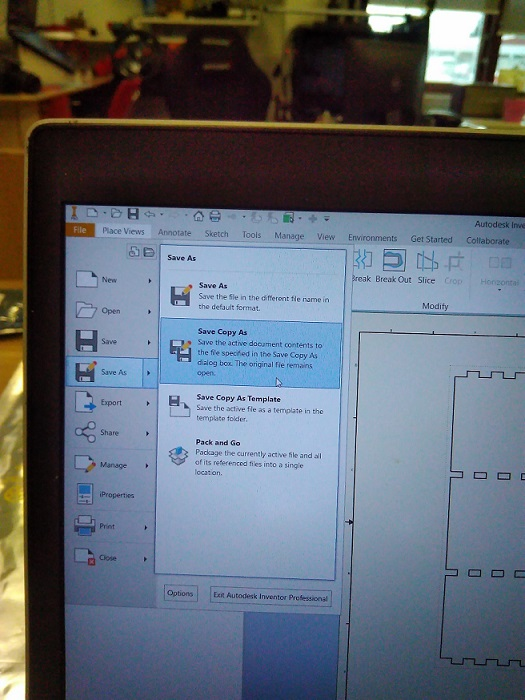Tölvan spyr þig svo hvar þú vilt vista og í hvaða file og nú verður að velja DXF
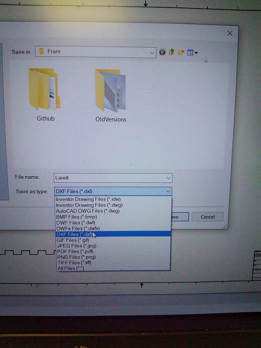Núna er kominn File sem má setja á USB kubb og fara með yfir í Laser skera.
Þegar Kom að Laser skurðinun kom ýmislegt uppá. Eftir slaginn að koma öllu úr Inventor og yfir í Incskape þá fór ég að skera og kom í ljós að fingurnir voru ekki að festast nógu vel saman. Einnig var vandamál við að teikna þetta í Inventor því línurnar voru ekki tengdar saman og þurfti að tengja þær allar saman. Það er gert með því að gera eftirfarandi skipanir:
1. Farðu í Path
2. Veldu Combine og veldu línuþykkt 0.15
3. Veldu Stroke to Path
4. Nú þarftu að setja línuþykktina í 0.002
5. Taktu út fill, veldu Stroke og settu í rauðan lit alveg eins langt og sláinn nær.
6. Veldu Break apart
7. Nú þarftu svo að gera Ungroup, með ctrl-shift-g
8. Þú þarft að gera ungroup þangað til það eru 0 group eftir.
Þegar þetta hefur verið gert, þá er búið að tengja saman allar línur og einnig er búið að offseta þær um 0.15mm. Næst þarf svo að fara og eyða innri og ytri línum í þeim tilfellum sem við á. Við þetta munu Fingurnir/ribbunar passa mun betur saman.
Þegar búið er að raða því sem skera á út og passa að rétt stærð sé á plötu eftir því hvor laserinn er um að ræða t.d. 1000x700 í Anakin eða þeim stóra, þá þarf einfaldlega að gera save as pdf. því næst er að opna pdf skjalið og ýta bara á print, þa´kemur glugginn upp sem má sjá á myndini hér að neðan og passa að hafa þessar stillinga, en á veggnum í Fablab má sjá þær stærðir sem á að setja hér inn eftir aðstæðum.
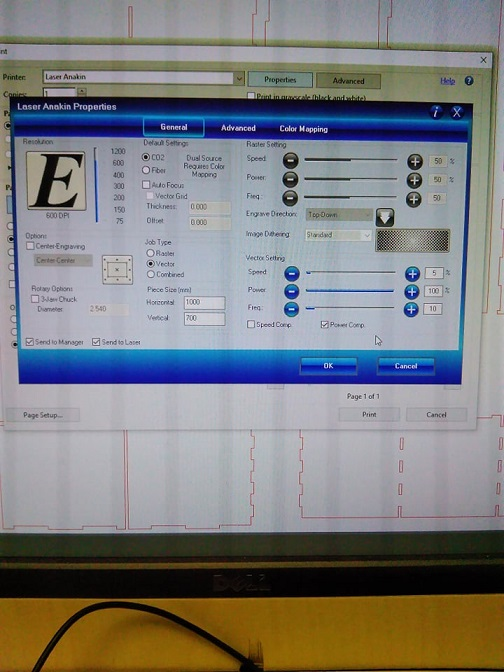Svo þegar búið er að ýta á print þarf að stilla hæðina á lasernum við plötuna, núllstilla hann út í því horni sem menn vilja og ýta á start, Anakin sér um rest.
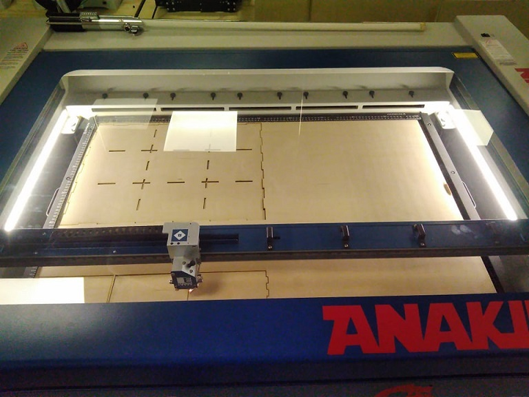https://www.youtube.com/watch?v=9U2JPfkQpsE
https://www.youtube.com/watch?v=Q8Qt5hs7xpE
Næsta Mótorhjólið í safnið.

kemur.

Meira
.